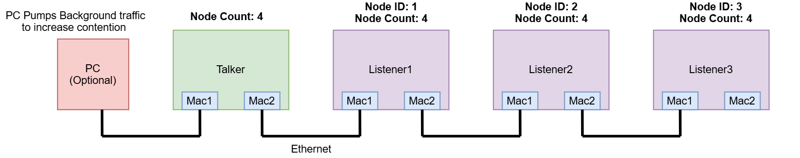

Introduction
This is the listener side of the TSN integrated demo. One talker node (Enet CPSW TSN Integrated Demo - Talker) generates a measured express probe stream and, optionally, a saturating bulk background stream; every other node in the chain runs this listener image. See the talker page for the full concept explanation (why TSN, what the demo measures, chain topology, the wire traffic mix, and the bidirectional chain-position-staggered EST design) - this page only covers what's specific to the listener role, and how to configure its own features.
Role of Listener in this Demo:
- Run gPTP as a slave, synchronized to the talker (grandmaster).
- Echo express probe frames addressed to this node back to the talker, adding two timestamps: T2, the hardware ingress timestamp of the received probe, and T3, a software timestamp taken just before the echo is submitted for transmission.
- Apply/remove EST configuration on its own two ports from a UART menu, matching whatever the talker is set to.
- Forwards transit traffic toward nodes further down the chain - is done by the CPSW hardware switch (ALE) and never reaches the CPU. The listener configures one ALE multicast entry for its own probe address (delivered to the host port only) and lets all other traffic flood in hardware between the two MAC ports.
This example does the following:
- Target-side application running on a Cortex R5F core.
- CPSW in switch mode, both MAC ports enabled.
- gPTP via the TSN stack (uniconf + gptp tasks).
- Echo path: on probe reception, copies the probe header into a transmit frame, sets its feature state in
featureBits, and transmits it back toward the talker.
- The
featureBits echoed in every frame is how the talker verifies the whole chain is in the same feature state before opening a measurement window.
- The 'L' command increases upstream network congestion by looping background traffic back to the talker entirely via hardware inside the final listener.
Test Setup

Talker,Listener EVM Connections
Supported Combinations
| Parameter | Value |
| CPU + OS | r5fss0-0_freertos |
| Toolchain | ti-arm-clang |
| Boards | AM263x-LP, AM263x-CC |
| Example folder | source/networking/enet/core/examples/tsn_demo/listener |
Steps to Run the Example
Build the example
- When using CCS projects to build, import the CCS project for the required combination and build it using the CCS project menu (see Using SDK with CCS Projects).
- When using makefiles to build, note the required combination and build using make command (see Using SDK with Makefiles).
HW Setup
- Note
- Make sure you have setup the EVM with cable connections as shown here, EVM Setup. In addition do the below steps.
- Connect this node's MAC port 1 toward the talker (or toward the previous listener in the chain), and MAC port 2 toward the next listener if any (see the above picture for Talker,listener EVM connections)
- All links must run at 1 Gbit (see the talker page for why the EST schedule depends on link speed).
Run the example
- Launch a CCS debug session and run the example executable (see CCS Launch, Load and Run).
- At the UART prompt, enter:
- the node id (
1..N, this node's position in the chain),
- the total number of nodes in the chain including talker.
- Wait for gPTP sync. The listener prints its sync state; it starts echoing as soon as the datapath is up.
- When the talker operator switches to a TSN-on run mode, enable the same features here before starting the run on the talker (listeners first, talker last - IET verification is a link-partner handshake and needs both ends enabled).
- To enable IET feature both link partners should have IET configured. Press 'i' in both link partner consoles and verify IET enablement using 'Features applied: EST=off IET=on CUTTHRU=off' print
EST schedule parameters
Every feature starts off on every boot/reset and the ‘'d’status print will show EST=off IET=off CUTTHRU=offuntil you toggle something from the console. Once you press'e'`, this node computes and programs the gate-control list below on both of its MAC ports.
EST schedule parameters
| Parameter | Value |
| BaseTime | Current gPTP time + TSNDEMO_EST_BASETIME_MARGIN_NS (2 sec), rounded up to the next CycleTime boundary, then offset per-port by this port's chain-position stagger (0 for a downstream-facing port) |
| CycleTime | TSNDEMO_EST_CYCLE_NS = 125000 ns (125 usec), fixed |
Gate control list (3 entries per port, every cycle) - values shown for a downstream-facing port with IET off
| Gate Control | Time Interval | Traffic Allowed |
oCoCCCCC | 20000 ns | gPTP (pri7) + express probes (pri5, TSNDEMO_PCP_EXPRESS) |
oooooooo | 92500 ns | Everything - bulk (pri1, TSNDEMO_PCP_BULK), gPTP, and any other priority not explicitly protected |
oCCCCCCC | 12500 ns | gPTP only (guard band ahead of next cycle's express window) |
Gate bits are ordered pri7..pri0 (o = open, C = closed).
- These numbers hold for the talker's port and any listener's downstream-facing port, where the express window is fixed at
TSNDEMO_EST_DOWNSTREAM_WIDTH_NS = 20000 ns. A listener's upstream/echo-facing port uses a wider express window that grows with this node's distance from the end of the chain instead - see TsnDemoFeature_computePortWindow() in tsndemo_feature.c.
UART Menu
--- TSN Demo Listener -------------------------------------
'e' - Toggle EST
'g' - Show EST schedule
'd' - Status
'v' - Trace next 10 probes 'r' - Reset counters
'L' - Toggle bulk reflector (last node in chain only)
'x' - Stop
| Key | Action |
| e | Toggle EST (applies the same feature state locally, matching the talker) |
| g | Show this node's live EST gate schedule/oper-list, per port |
| d | Show status (sync state, echo/probe counters, feature state, bulk-reflector state) |
| v | Trace the next several received probes to the console - a bounded bring-up aid, not part of a measurement run |
| r | Reset counters |
| L | Toggle the bulk-EtherType reflector. Refused on any node with a downstream neighbor - only the true last node in the chain should reflect bulk traffic back upstream |
| x | Stop |
Sample output
==========================
TSN Demo - Listener
==========================
Enter node id [1..3]: 1
Enter number of nodes [2..4]: 2
Open MAC port 1
EnetPhy_bindDriver:1942
Open MAC port 2
EnetPhy_bindDriver:1942
PHY 3 is alive
PHY 12 is alive
TX pools: express 8 pkts, bulk 16 pkts (payload prefilled 0xA5)
Host MAC address: 1c:63:49:06:f1:ff
ALE classifier: EtherType 0x88b5 -> RX flow 1 (probe/echo, pri 15); default -> RX flow 0 (bulk, pri 14)
unibase-1.1.4
INF:cbase:tilld0: has mac: 1C:63:49:06:F1:FF
INF:cbase:tilld1: has mac: 00:00:00:00:00:00
INF:cbase:cb_lld_task_create: uniconf_task stack_size=8192
Uniconf/ModuleInit time= 2959/10280 us
TSN app start done!
Echo responder running, nodeId=1
log ovflow!
INF:cbase:rxChId 2 has owner dmaRxShared 0
log ovflow!
INF:ubase:SM_DATA_INST: fragsize=8 fragused/fragnum=2032/2032 (100%)
Cpsw_handleLinkUp:1616
MAC Port 2: link up
INF:cbase:000007-648654:cbl_query_response:tilld1: link UP, speed=1000, duplex=1 !!!! (126us since link change event)
Cpsw_handleLinkDown:1642
MAC Port 2: link down
INF:cbase:cbl_query_response:tilld1 link DOWN !!!!
Waiting for gPTP sync-stable (5 s) - still self-elected grandmaster, no master heard yet...
Cpsw_handleLinkUp:1616
MAC Port 2: link up
INF:cbase:000011-948646:cbl_query_response:tilld1: link UP, speed=1000, duplex=1 !!!! (118us since link change event)
WRN:gptp:000012-999513:waiting_for_pdelay_interval_timer_proc:portIndex=2, sourcePortIdentity=28:9E:1E:FF:FE:07:F8:70, thisClock=1C:63:49:FF:FE:06:F1:FF, neighborPropDelay=427
Waiting for gPTP sync-stable (10 s) - still self-elected grandmaster, no master heard yet...
Waiting for gPTP sync-stable (15 s)...
Waiting for gPTP sync-stable (20 s)...
Waiting for gPTP sync-stable (25 s)...
gPTP sync-stable.
gPTP role : slave (sync-stable here reflects measured offset/rate convergence to the master)
Port 2 link speed: 1000 Mbps
--- TSN Demo Listener -------------------------------------
'e' - Toggle EST
'g' - Show EST schedule
'd' - Status 's' - CPSW statistics
'v' - Trace next 10 probes 'r' - Reset counters
'L' - Toggle bulk reflector (last node in chain only)
'x' - Stop
\code
e
EST base time (derived): 40.225625000, cycle 125000 ns
EST: port 1 has no link - skipping (nothing to gate)
Features applied: EST=on IET=off CUTTHRU=off
g
<live per-port EST oper-list readback, including this port's computed
upstream/downstream role and offset>
Troubleshooting issues
- Link not at 1 Gbit: see the talker page - the staggered EST schedule's timing assumes 1 Gbit throughout the chain.
- This node ended up with the wrong upstream/downstream role: double check the node id and total chain length you entered at boot - both are used to derive which port faces downstream, and a wrong answer to either one (especially the chain length) will misapply the stagger on both of this node's ports even though ‘'g’` will still print something plausible-looking.
- **‘'L’` refused**: this is expected on any node that has a downstream neighbor - only the true end of the chain should reflect bulk traffic back upstream, to avoid duplicate reflected frames.
See Also
Enet CPSW TSN Integrated Demo - Talker, Ethernet And Networking
 1.8.20
1.8.20